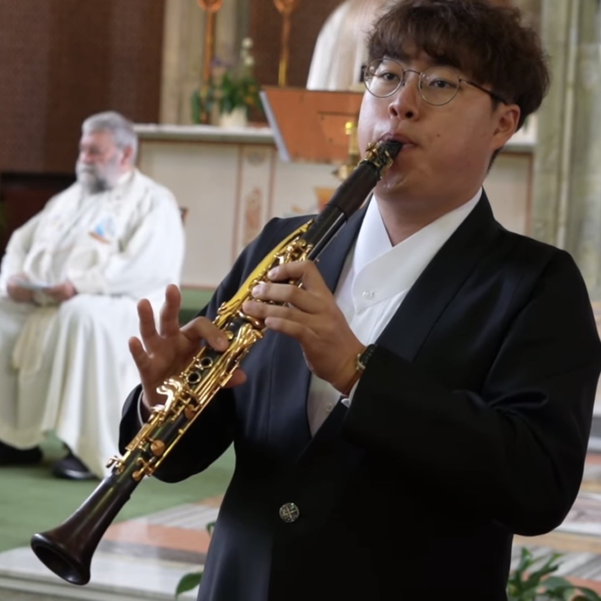

About us
Music should be a shared, everyday experience.
A community music social enterprise founded in Dublin in January 2024. Not a performance company — a participatory community, where playing is the point.
Mission
To make live classical music genuinely available to everyone — regardless of age, background, mobility, income or prior musical knowledge — by teaching people to play, playing alongside them, and bringing music to the places it does not normally reach.
Vision
An Ireland in which every community — urban, rural, in care, and living with disability — has a welcoming pathway into making music together, delivered by educators in secure, properly paid employment.

Theory of change
What a room, an hour and a recorder are supposed to add up to.
From what goes in to what changes
Values
Five, described by what they cost us.
Dignity
Everyone is treated as someone who can still create — regardless of age, health or circumstance.
Accessibility
We lower the barriers of price, distance and unfamiliarity — physical, environmental and psychological alike.
Accompaniment
We stay alongside people for a whole term, not for a one-off visit. Meaning grows through continuity.
Community
Music that connects people across age, background and language.
Hope
We promise no dramatic transformation — only small, real moments of connection.
Work for educators
Music educators mostly work in precarious freelance conditions. Employing them properly is our second social aim.

The founder
Andrew Seohyeon Kim
Clarinettist, organist and community music practitioner, based in Dublin. He founded Classical Music for Everyone and the Letters Ensemble in January 2024, and leads every programme on this site.
The practice
He is in the room for all of it. The tutor at the recorder class, the speaker at the lecture-recitals, the person who books the outing, the clarinettist at the care home, and the conductor of the ensemble that plays there are the same person.
That is a limit as much as a description — it is why the organisation says five programmes rather than fifty sessions a week, and why employing music educators properly is the second social aim rather than a nice idea. The work does not scale on one person, and it is not meant to.
He graduated from TU Dublin Conservatoire with a Bachelor of Music (Hons) in Performance in May 2026, studying clarinet with Dr Paul Roe alongside organ, cello and piano. His final-year research was a practice-based study of the ten-week recorder ensemble he designed and led for seven retired Presentation Sisters in Dublin — the work the whole teaching programme is built on.
Church and community, one practice
Music Director at Our Lady of Dolours Church, Dolphin’s Barn since September 2022, and principal Sunday organist at the Church of the Three Patrons, Rathgar since September 2023 — Holy Week liturgies, school and remembrance Masses, funerals and parish concerts.
For parish and religious audiences the work is described as a lay apostolate through music: a ministry of presence rather than a concert series. It is the same practice as the community work, described to the people who asked for it.
“Through music, he offers encouragement, dignity, and spiritual accompaniment to those who may otherwise feel isolated.”
Donal Roche, Auxiliary Bishop of Dublin · 16 February 2026Training and roles
Where the practice comes from.
Education and training
- BMus (Hons) in Performance — TU Dublin Conservatoire, 2022–2026
- Clarinet — Dr Paul Roe
- Organ — Simon Harden · Cello — Arun Rao · Piano — Sam Armstrong
- Conducting — Irish Association of Youth Orchestras · London Conducting Workshop · TU Dublin Special Studies
- Social enterprise — TU Dublin Venture Lab, from September 2024
- Scholarship — Myongdohoe, Lay Apostolate Committee, Catholic Bishops’ Conference of Korea, from March 2025
Current roles
- Founder & Project Lead — Classical Music for Everyone, from January 2024
- Founder, Music Director & Conductor — Letters Ensemble, from January 2024
- Music Director — Our Lady of Dolours Church, Dolphin’s Barn, from September 2022
- Organist — Church of the Three Patrons, Rathgar, from September 2023
- Student Ambassador — TU Dublin, from August 2024
Before this
- Baram, 2023–24 — a Korean traditional and classical duo; embassy events and cultural exhibitions
- Chorus of Angels, 2023 — a children’s choir for Korean and mixed-heritage children in Dublin
- At Home Ensemble Project, 2020–21 — a virtual wind ensemble during Covid-19
Volunteering
- World Youth Day, Lisbon, 2023 — logistics, music, liturgy, language assistance
- ICA ClarinetFest, Dublin, 2024 — support and interpreting
- 13th Dublin International Piano Competition, 2025 — Team Harmony
- Jubilee of Youth, Rome, 2025 · Korea Festival, Farmleigh House, 2025
Portugal and Italy appear here as volunteering. The four countries in our record are the four we have performed in.
Collaborating artists
- Dr Soo-Jung Ann, piano — Doctor of Music, RIAM 2022; first prize, 58th Maria Canals International Competition
- Hyelee Jung, soprano — Silla University; Conservatorio di Santa Cecilia, Rome
- Jaewon Kim, haegeum — guest artist for Shared Voices of Care and An Autumn Concert, 2026
Where we have played
Rooms music does not usually enter.
Residential and nursing care · religious communities · parishes · a university · a national concert hall · an HSE day service · a homeless hostel · community centres.
Ireland
- National Concert Hall & TU Dublin, Grangegorman
- Tallaght University Hospital · Rua Red, Tallaght
- Our Lady of Dolours, Dolphin’s Barn · Three Patrons, Rathgar
- Carmelite Community Centre · Blessed Sacrament Chapel
- Clondalkin Lodge · Warrenmount, Dublin 8
- Missionary Sisters of St Columban, Co. Wicklow
- Franciscan Missionaries of Mary, Dublin 5
- Dalgan Park & Kilmessan Church, Co. Meath · Dysart, Co. Westmeath
- HSE EVE Goirtin Hub · Morning Star Hostel, Dublin 7
- Methodist Centenary Church, Ranelagh · Mulhuddart Community Centre, D15
Abroad
- Sanctuary of Our Lady of Lourdes, France
- Missions Étrangères de Paris · Palais Brongniart, Paris
- London Korean Catholic Church, United Kingdom
- Gwandukjeong Martyrs Memorial Centre, Daegu, Korea
What we do not claim
Our evidence is participation, retention and testimony — not measured outcome. Wellbeing has not been measured with a validated instrument, and outreach audiences were never counted. From the autumn 2026 cohort we are introducing a simple pre/post measure and a consent framework. The full statement.
What we run
Five programmes, each with its own page.
Two pillars — teaching people to play, and playing for people who cannot easily get to a concert hall. Each programme is described at the same length, with the same facts, in the same order, and none of them is the main one.
The whole of what we run
Identity
The gold falls on Everyone.
The mark, the colours, the type and the rules for using them are published on a page of their own, so that anyone printing our name can hold us to the standard.
There is a place for you here.
Learn an instrument for the first time, come and listen, play alongside us, or open your venue. Start with one line.